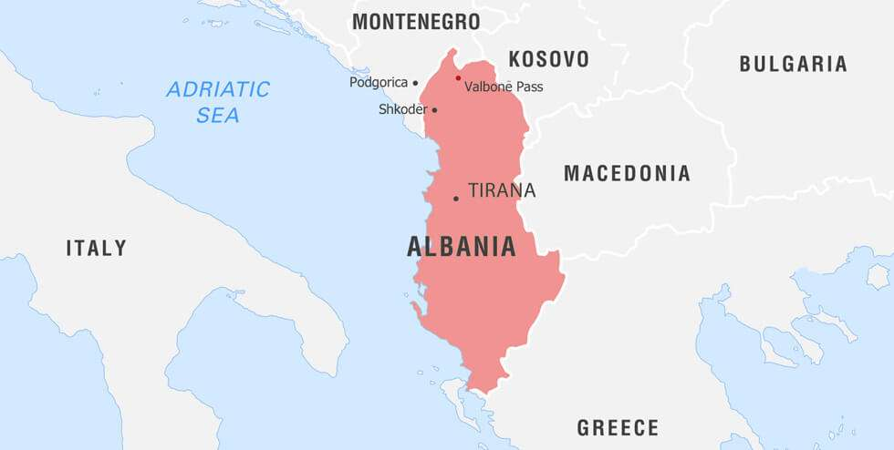

Albania, country in southern Europe, located in the western part of the Balkan Peninsula on the Strait of Otranto, the southern entrance to the Adriatic Sea. The capital city is Tirana (Tiranë).
Albanians refer to themselves as shqiptarë—often taken to mean “sons of eagles,” though it may well refer to “those associated with the shqip (i.e., Albanian) language”—and to their country as Shqipëria. They generally consider themselves to be descendants of the ancient Illyrians, who lived in central Europe and migrated southward to the territory of Albania at the beginning of the Bronze Age, about 2000 BCE. They have lived in relative isolation and obscurity through most of their difficult history, in part because of the rugged terrain of their mountainous land but also because of a complex of historical, cultural, and social factors.
Because of its location on the Adriatic and Ionian seas, Albania has long served as a bridgehead for various nations and empires seeking conquest abroad. In the 2nd century BCE the Illyrians were conquered by the Romans, and from the end of the 4th century CE they were ruled by the Byzantine Empire. After suffering centuries of invasion by Visigoths, Huns, Bulgars, and Slavs, the Albanians were finally conquered by the Ottoman Turks in the 15th century. Ottoman rule cut off Albania from Western civilization for more than four centuries, but in the late 19th century the country began to remove itself from Ottoman influence and to rediscover old affinities and common interests with the West.

Albania was declared independent in 1912, but the following year the demarcation of its boundaries by the great powers of Europe (Austria-Hungary, Britain, France, Germany, Italy, and Russia) assigned about half its territory and people to neighbouring states. Ruled as a monarchy between the World Wars, Albania emerged from the violence of World War II as a communist state that fiercely protected its sovereignty and in which almost all aspects of life were controlled by the ruling party. But with the collapse of other communist regimes beginning in 1989, new social forces and democratic political parties emerged in Albania. That shift reflected the country’s continuing orientation toward the West, and it accorded with the Albanian people’s long-standing appreciation of Western technology and cultural achievements—even while retaining their own ethnic identity, cultural heritage, and individuality.